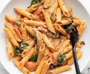

Pasta

Let's learn how to make pasta!
Today we will learn how to make a pizza at home
Ingredients Required
- 3/4 cup Penne Pasta or any Pasta
- 1/2 teaspoon Salt
- 4-5 cups Water
- 1 teaspoon finely chopped Garlic, optional
- 1½ tablespoons Maida (all purpose flour)
- 1½ cups Milk (250 ml)
- 1/4 teaspoon dried Oregano, optional (or pizza seasonings)
- 1/4 teaspoon Red Chilli Flakes
- A pinch of Black Pepper Powder (or crushed pepper)
- Salt to taste
Steps
- Step 1 - Boil raw pasta according to the instructions given on the package or follow following instructions;
Take 4-5 cups water
in deep sauce pan, bring it to boil over medium flame. When it start boiling, add 3/4 cup Penne pasta and
1/2 teaspoon
salt.
- step-2
Boil them until al-dente (cooked but not very soft). It will take around 10-12 minutes. To check whether
pasta is cooked
or not, take one pasta in a fork and bite it. If it is little firm to bite, it is cooked. If it is too hard
to bite, it
requires more cooking.
- step-3
Transfer cooked pasta to a large colander and drain excess water.
- step-4
While pasta is cooking, heat 1/2 teaspoon oil in a pan or kadai over high flame. Add 1/4 cup chopped carrot,
1/4 cup
chopped green capsicum, 1/4 cup chopped red capsicum, 1/4 cup chopped broccoli and salt.
- step-5
Stir and cook until veggies are little cooked but still crunchy, for around 2-3 minutes. Turn off the flame
and transfer
them to a plate.
- step-6
Heat 1½ tablespoons butter in the same pan or kadai over medium flame. Add 1/2 teaspoon finely chopped
garlic and sauté
for 30 seconds.
- step-7
Add 1½ tablespoons maida (all purpose flour).
- step-8
Stir continuously and cook for a minute.
- step-9
Pour 1½ cups milk little by little while stirring continuously with a whisk.
- step-10
Stir and mix for 1-2 minutes.
- step-11
Reduce flame to low. Continue stirring and cooking until mixture starts to thicken. It will take around 3-4
minutes
depending on the size and thickness of the pan. When mixture starts to coat the back of a spoon as shown in
the picture
here, it means that it has started to thicken.
- step-12
Add 1/4 teaspoon oregano, 1/4 teaspoon red chilli flakes, a pinch of black pepper powder and salt.
- step-13
Mix well.
- step-14
Add sautéed vegetables and pasta.
- step-15
Turn off the flame. Mix well.
- step-16
Transfer it to a serving plate. White sauce pasta is now ready. Garnish it with grated cheese and serve
while they are
still hot.